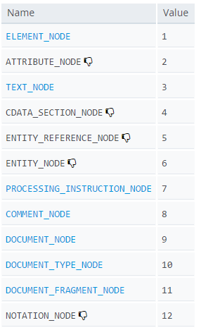

I am totally confused between Node object and Element object.
document.getElementById() returns Element object while
document.getElementsByClassName() returns NodeList object (Collection of
Elements or Nodes?)
If a div is an Element Object then what about div Node object?
What is a Node Object?
Are document object, Element object and Text Object are also Node object?
As per David Flanagan's book 'The Document object, Its Element Objects and
text objects are all Node objects'.
So How come an object can inherit properties/methods of Element object as well
as Node object?
If yes, I guess Node Class and Element Class are related in prototypal tree of
inheritance.
<div id="test">
<p class="para"> 123 </p>
<p class="para"> abc </p>
</div>
<p id="id_para"> next </p>
document.documentElement.toString(); // [object HTMLHtmlElement]
var div = document.getElementById("test");
div.toString(); // [object HTMLDivElement]
var p1 = document.getElementById("id_para");
p1.toString(); // [object HTMLParagraphElement]
var p2 = document.getElementsByClassName("para");
p2.toString(); //[object HTMLCollection]
Answer
A node is the generic name for any type of object in the DOM hierarchy. A
node could be one of the built-in DOM elements such as document or
document.body, it could be an HTML tag specified in the HTML such as
<input> or <p> or it could be a text node that is created by the system to
hold a block of text inside another element. So, in a nutshell, a node is
any DOM object.
An element is one specific type of node as there are many other types of
nodes (text nodes, comment nodes, document nodes, etc...).
The DOM consists of a hierarchy of nodes where each node can have a parent, a
list of child nodes and a nextSibling and previousSibling. That structure
forms a tree-like hierarchy. The document node has the html node as its
child. The html node has its list of child nodes (the head node and the
body node). The body node would have its list of child nodes (the top
level elements in your HTML page) and so on.
So, a nodeList is simply an array-like list of nodes.
An element is a specific type of node, one that can be directly specified in
the HTML with an HTML tag and can have properties like an id or a class.
can have children, etc... There are other types of nodes such as comment
nodes, text nodes, etc... with different characteristics. Each node has a
property .nodeType which reports what type of node it is. You can see the
various types of nodes here (diagram from MDN):

You can see an ELEMENT_NODE is one particular type of node where the
nodeType property has a value of 1.
So document.getElementById("test") can only return one node and it's
guaranteed to be an element (a specific type of node). Because of that it just
returns the element rather than a list.
Since document.getElementsByClassName("para") can return more than one
object, the designers chose to return a nodeList because that's the data
type they created for a list of more than one node. Since these can only be
elements (only elements typically have a class name), it's technically a
nodeList that only has nodes of type element in it and the designers could
have made a differently named collection that was an elementList, but they
chose to use just one type of collection whether it had only elements in it or
not.
EDIT: HTML5 defines an HTMLCollection which is a list of HTML Elements
(not any node, only Elements). A number of properties or methods in HTML5 now
return an HTMLCollection. While it is very similar in interface to a
nodeList, a distinction is now made in that it only contains Elements, not
any type of node.
The distinction between a nodeList and an HTMLCollection has little impact
on how you use one (as far as I can tell), but the designers of HTML5 have now
made that distinction.
For example, the element.children property returns a live HTMLCollection.
Suggest
Element inherits from Node, in the same way that Dog inherits from
Animal.
An Element object "is-a" Node object, in the same way that a Dog object
"is-a" Animal object.
Node is for implementing a tree structure, so its methods are for
firstChild, lastChild, childNodes, etc. It is more of a class for a
generic tree structure.
And then, some Node objects are also Element objects. Element inherits
from Node. Element objects actually represents the objects as specified in
the HTML file by the tags such as <div id="content"></div>. The Element
class define properties and methods such as attributes, id, innerHTML,
clientWidth, blur(), and focus().
Some Node objects are text nodes and they are not Element objects. Each
Node object has a nodeType property that indicates what type of node it
is, for HTML documents:
1: Element node
3: Text node
8: Comment node
9: the top level node, which is document
We can see some examples in the console:
> document instanceof Node
true
> document instanceof Element
false
> document.firstChild
<html>...</html>
> document.firstChild instanceof Node
true
> document.firstChild instanceof Element
true
> document.firstChild.firstChild.nextElementSibling
<body>...</body>
> document.firstChild.firstChild.nextElementSibling === document.body
true
> document.firstChild.firstChild.nextSibling
#text
> document.firstChild.firstChild.nextSibling instanceof Node
true
> document.firstChild.firstChild.nextSibling instanceof Element
false
> Element.prototype.__proto__ === Node.prototype
true
The last line above shows that Element inherits from Node. (that line
won't work in IE due to __proto__. Will need to use Chrome, Firefox, or
Safari).
By the way, the document object is the top of the node tree, and document
is a Document object, and Document inherits from Node as well:
> Document.prototype.__proto__ === Node.prototype
true
Here are some docs for the Node and Element classes:
https://developer.mozilla.org/en-US/docs/DOM/Node
https://developer.mozilla.org/en-US/docs/DOM/Element